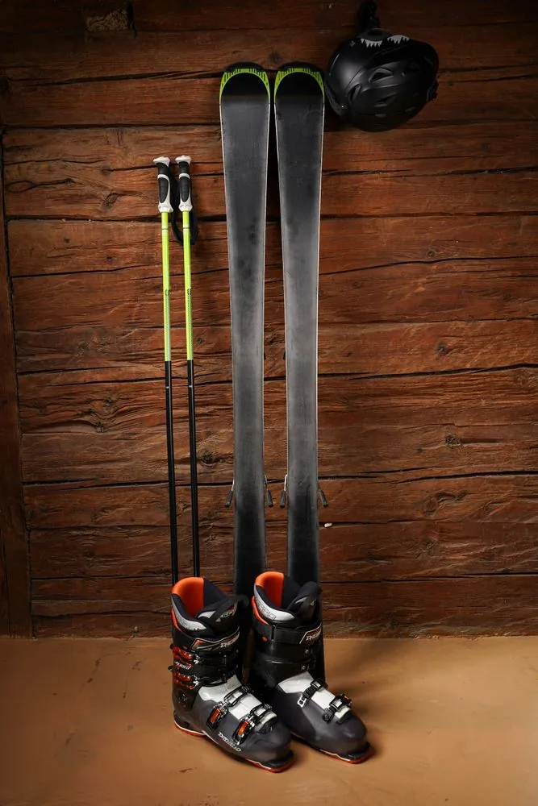

Ski- en snowboardonderhoud in Wamel
Jouw skispecialist.
Jouw skispecialist.
In Maas en Waal.
Voor ski’s én snowboards. Handmatig slijpen, belag repareren en waxen in onze werkplaats in Wamel.
Zelf brengen en ophalen in Wamel.Woensdag op afspraak · andere dagen in overleg.
Waxen · slijpen · reparerenOnderhoud afgestemd op jouw materiaal
Brengen & ophalen in WamelWoensdag op afspraak · andere dagen in overleg
Betalen als het gereed isVóór het ophalen
Live per skigebied
Sneeuwtemperatuur op jouw bestemming
De sneeuwcondities worden opgehaald.
Buitenlocaties tonen een schatting op basis van de actuele luchttemperatuur op de vermelde modelhoogte en alleen wanneer het weermodel daar sneeuwdek ziet. De 7-daagse weersindicatie geeft alleen context en bepaalt de waxkeuze niet.
Waxkeuze: de actuele geschatte sneeuwtemperatuur is alleen een hulpmiddel. Voor recreatief gebruik zijn de praktische verschillen meestal beperkt. Bij skihallen gebruiken we de vermelde binnentemperatuur.
Jouw onderhoud uitgelegd
Waxen
We bereiden het belag voor en brengen hoogwaardige rode Holmenkol BetaMix Red aan. Na het afkoelen schrapen we overtollige wax weg. Daarna borstelen we de bestaande structuur vrij en polijsten we het belag.
De normale voorbereiding en deze afwerking zijn inbegrepen bij ieder waxpakket.
Extra warme waxreiniging
Aanbevolen · ski’s + € 2,50 per paar · snowboard + € 5,00Voor een schone basis adviseren we een warme waxreiniging. We brengen reinigingswax aan en schrapen die warm weer af. Zo nemen we zoveel mogelijk oude waxresten en vuil mee voordat we de nieuwe wax aanbrengen. Je kiest deze extra reiniging bij je waxbeurt.
Gele, blauwe of paarse extra wax
Ski’s + € 5,00 per paar · snowboard + € 7,50Je kunt de rode basiswax aanvullen met een extra waxlaag die past bij jouw sneeuwcondities. Ook deze laag laten we afkoelen, schrapen we af en borstelen we zorgvuldig uit.
Gele wax — AlphaMix Yellow: voor zachtere sneeuw, bij sneeuwtemperaturen van ongeveer 0 tot −4 °C.
Blauwe wax — UltraMix Blue: voor koude, oudere en schurende sneeuw, bij sneeuwtemperaturen van ongeveer −8 tot −20 °C.
Paarse wax — Performance Purple: een slijtvaste wax die weinig vuil opneemt en breed inzetbaar is bij sneeuwtemperaturen van 0 tot −12 °C.
Opslagwax
Ski’s € 7,50 per paar · snowboard € 10,00Voor het opbergen brengen we een beschermende waxlaag aan die we niet afschrapen of uitborstelen. Deze laag beschermt het belag tijdens de opslag tegen uitdroging en vuil. Aan het begin van het nieuwe seizoen is een gewone waxbehandeling voldoende, zonder extra waxreiniging.
Kanten slijpen voor grip en controle
We controleren de staalkanten, slijpen op de afgesproken hoek en verwijderen bramen. Zo krijgt je materiaal een verzorgde basisafwerking voor grip en controle.
Bij Brons kies je alleen slijpen. Zilver combineert deze behandeling met waxen.
Premium slijpen
Na de basisbewerking werken we de kanten extra fijn af: eerst met diamant medium, daarna met Racing File S. We houden dezelfde afgesproken slijphoek aan.
Bij Brons of Zilver kun je dit voor € 7,50 extra per paar ski’s of snowboard kiezen.
Belag repareren
Kleine, oppervlakkige beschadigingen vullen we en werken we handmatig vlak af. Grotere of diepere schade bespreken we eerst, samen met de aanpak en prijs.
We gebruiken zwart of transparant herstelmateriaal, passend bij het belag en de beschadiging. We stemmen vooraf af welke uitvoering het beste aansluit bij jouw ski’s of snowboard.
Lichte reparaties zijn inbegrepen bij Platinum. Los vanaf € 7,50 per beschadiging.
Bindingen en spoed
Snowboardbindingen demonteren en terugplaatsen: € 7,50 per snowboard. Spoedonderhoud: + € 10,00 per gekozen pakket, alleen in overleg en na bevestiging.
Handig voor onderweg
Met de Holmenkol waxstick (€ 17,50 per stuk) werk je het glijvlak tussendoor bij zonder waxijzer. Een handige aanvulling, geen vervanging van een volledige waxbeurt.
Welk onderhoud past bij jou?
Waxen
Voor een verzorgd belag en soepel glijden.
Ski vanaf · per paar€ 19,95
Snowboard vanaf€ 24,95
- Belag controleren en reinigen
- Rode basiswax aanbrengen
- Overtollige wax afschrapen
- Bestaande structuur vrijborstelen en belag polijsten
Kanten slijpen
Voor grip en controle. Zonder waxbeurt.
Ski vanaf · per paar€ 24,95
Snowboard vanaf€ 24,95
- Staalkanten controleren
- Handmatig slijpen
- Bramen verwijderen en tunen
Waxen + slijpen
Een complete basisbeurt voor je materiaal.
Ski vanaf · per paar€ 34,95
Snowboard vanaf€ 39,95
- Alles van Koper
- Alles van Brons
- Afwerken en eindcontrole
Waxen + premium slijpen
De complete basisbeurt met diamant medium en Racing File S.
Ski vanaf · per paar€ 42,45
Snowboard vanaf€ 47,45
- Alles van Zilver
- Premium slijpen inbegrepen
- Afwerken en eindcontrole
Met lichte reparaties
Voor materiaal dat ook kleine belagschade heeft.
Ski vanaf · per paar€ 49,95
Snowboard vanaf€ 54,95
- Alles van Goud
- Lichte belagreparaties
- Diepere schade eerst beoordelen
Vanafprijzen inclusief btw. Ski’s per paar, snowboards per stuk. De definitieve werkzaamheden stemmen we af op de staat van je materiaal.
Weet je niet wat nodig is? Vraag ons om advies →

Aandacht die je voelt
Goed voor je materiaal.
Goed voor je materiaal.
Fijn op de piste.
Gericht onderhoud, met oog voor de staat van jouw ski’s of snowboard. Voor grip, glijvermogen en langer plezier van je materiaal.
In onze werkplaats in Wamel bekijken we ieder paar ski’s en ieder snowboard. We bespreken wat nodig is en houden je op de hoogte van de voortgang. Extra werkzaamheden voeren we alleen uit na overleg.
Meer over onze werkwijzeMeer weten over wax en je glijvlak?
Van glijvlak naar sneeuw
Waar blijft je wax?
Volg in de animatie wat er tijdens het glijden onder je ski’s of snowboard gebeurt.
Bekijk de drie stappen
De stappen spelen automatisch af. Kies een stap om het beeld stil te zetten.
Schematische animatie in een herhalende lus. Goud stelt wax voor; het detail en de waxdeeltjes zijn sterk uitvergroot. De slijtage verschilt per sneeuwsoort, wax en gebruik.
Welke rol speelt warmte?
Warmte door wrijving kan bijdragen aan een dun waterfilmpje tussen belag en sneeuw. Wax slijt ook bij koude sneeuw; hij hoeft daarvoor niet eerst te smelten.
Brengen & ophalen in WamelJe werkplaats in Wamel.
Je werkplaats in Wamel.
Dicht bij huis.
Woensdag is onze vaste breng- en ophaaldag, altijd op afspraak. Komt een andere dag beter uit? Ook dat is in overleg bespreekbaar.
App vooraf even voor een tijdstip. Brengen en ophalen spreken we persoonlijk af. Bezoekadres: Hollenhof 13, 6659 BB Wamel.
Reserveer je onderhoudRoute naar Hollenhof 13 →- 1Eerst reserveren
Kies je onderhoud. App voor een tijdstip.
- 2Brengen op afspraak
Op het afgesproken tijdstip in Wamel.
- 3Ophalen als het gereed is
Het ophaalmoment spreken we samen af.
Mijn Lattenspecialist
Open Mijn Lattenspecialist
Volg je materiaal van ontvangst tot gereed.
Met je persoonlijke onderhoudscode zie je de actuele voortgang, uitgevoerde werkzaamheden en de gekozen wax.
Nog even dit
Goed om te weten.
Wanneer is mijn materiaal weer klaar?
We laten je weten zodra je materiaal gereed is en spreken samen een ophaalmoment af. Woensdag is onze vaste breng- en ophaaldag; andere dagen zijn in overleg bespreekbaar.
Kan het ook met spoed?
Ja, spoed is in overleg mogelijk, minimaal 2 werkdagen vooraf en na bevestiging. De toeslag is € 10,00 per gekozen pakket. Je brengt en haalt het materiaal zelf in Wamel.
Kan ik alleen mijn kanten laten slijpen?
Ja. We controleren en slijpen de staalkanten handmatig en verwijderen bramen. Werkzaamheden aan het belag zijn bij dit pakket niet inbegrepen.
Moeten de kanten altijd worden geslepen bij een kleine reparatie?
Nee. We vullen de beschadiging en werken de plek handmatig vlak af. De kanten slijpen we alleen wanneer hun staat daar aanleiding toe geeft en na overleg.
Moet ik vooraf reserveren?
Ja, reserveer altijd voordat je je ski’s of snowboard brengt. Woensdag is onze vaste breng- en ophaaldag, altijd op afspraak. App vooraf even voor een tijdstip; andere dagen zijn in overleg bespreekbaar.
Is intensieve extra reiniging verplicht?
Nee, je kiest dit zelf. We adviseren extra warme waxreiniging voor een schone basis: € 2,50 per paar ski’s of € 5,00 per snowboard. De normale voorbereiding en rode basiswax blijven inbegrepen in je waxpakket.
Kan ik ook materiaal huren?
Ja. Huur een complete skiset vanaf € 69 per week, ski’s met stokken vanaf € 49 per week of een dakkoffer met daksteunen vanaf € 20 per week. Bekijk de verhuurpagina en reserveer direct; pasvorm en beschikbaarheid bevestigen we persoonlijk.
Meer voor je wintersport
Verhuur
Producten & advies
Verhuur, producten & advies.
Passend materiaal voor je reis.
Bekijk complete skisets, ski’s met stokken en dakkoffers op de aparte verhuurpagina.
Naar VerhuurWintersportartikelen met advies.
Bekijk het actuele aanbod en neem rechtstreeks contact op voor persoonlijk advies.
Bekijk producten & advies